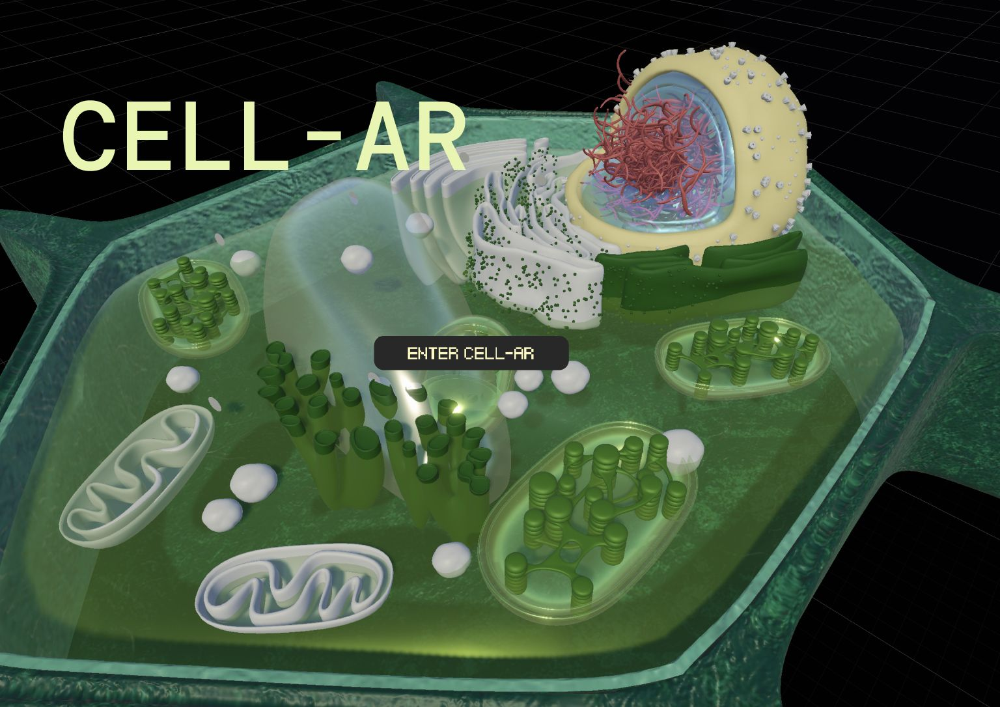
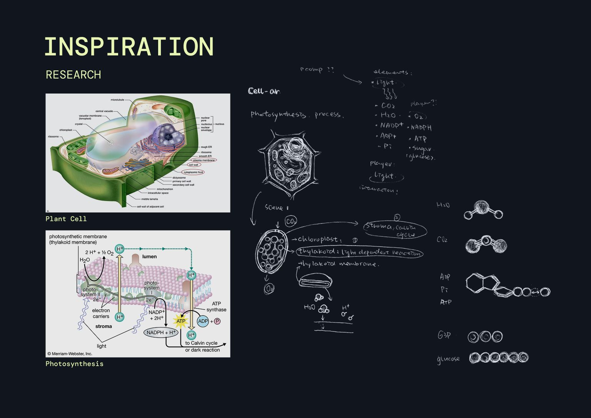
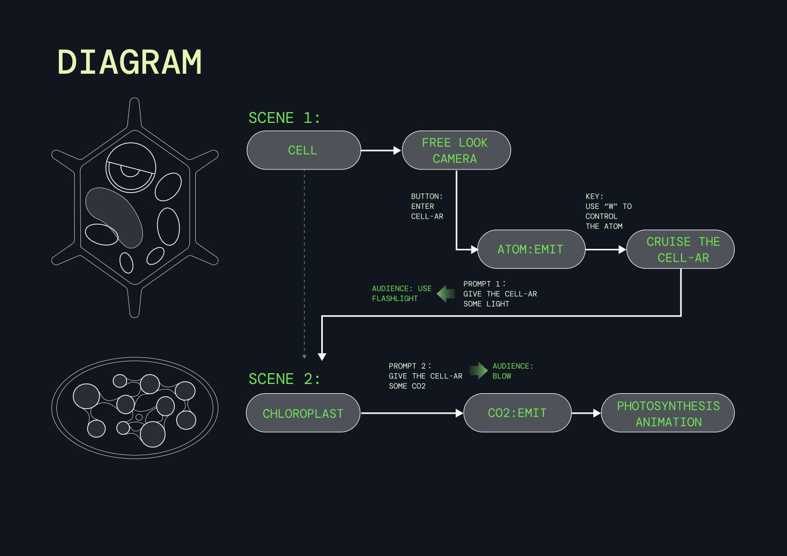
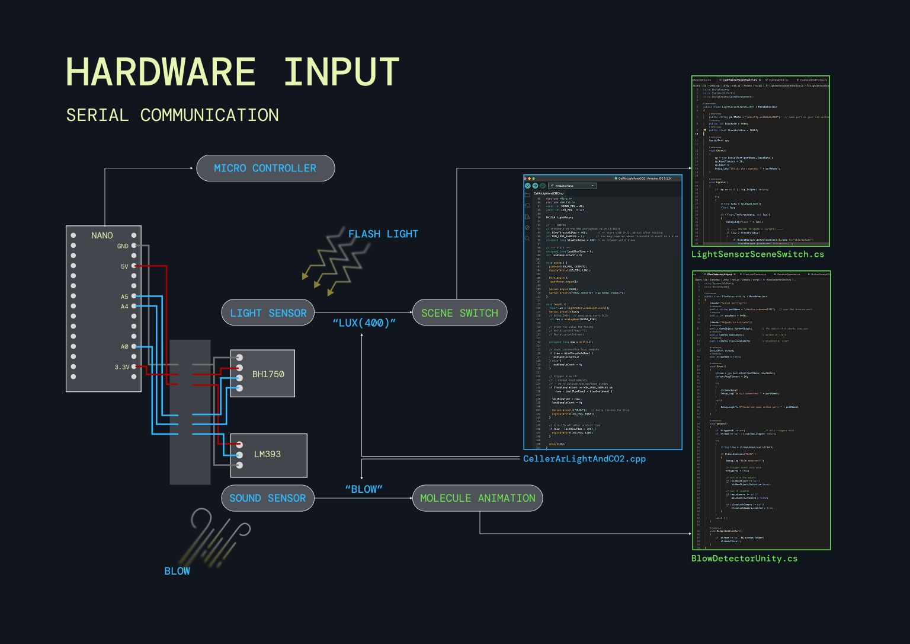
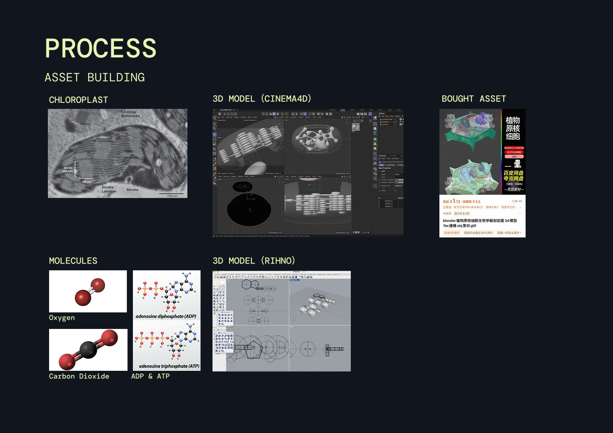
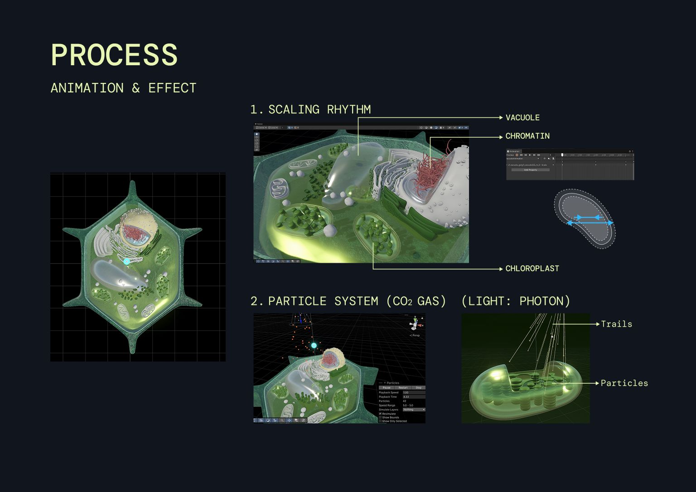
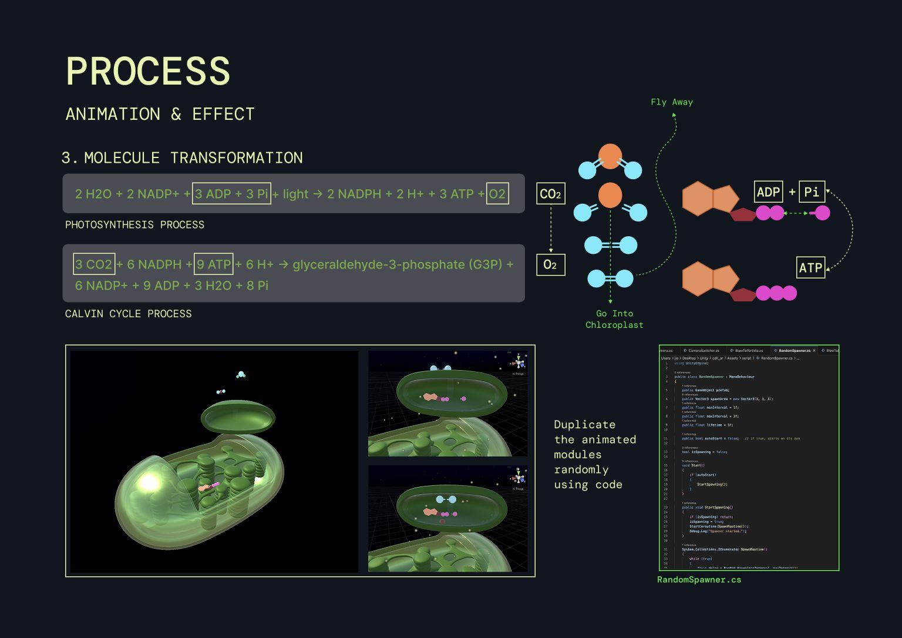
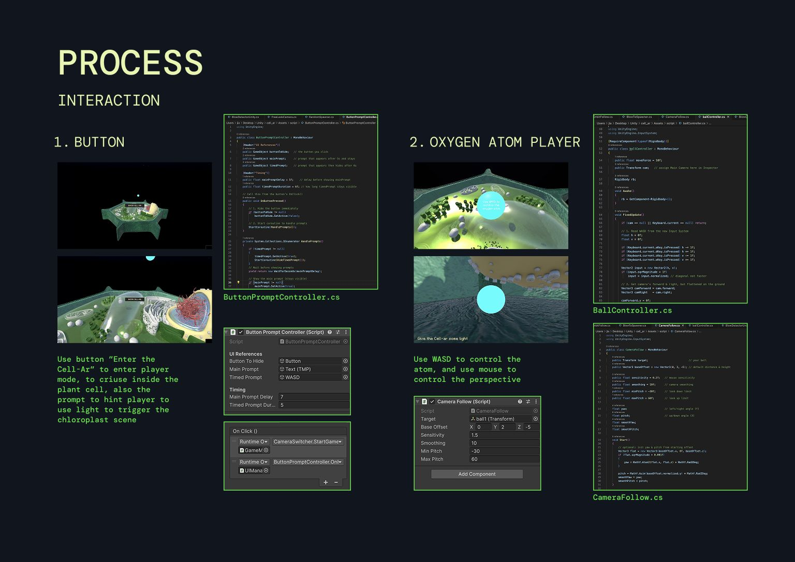
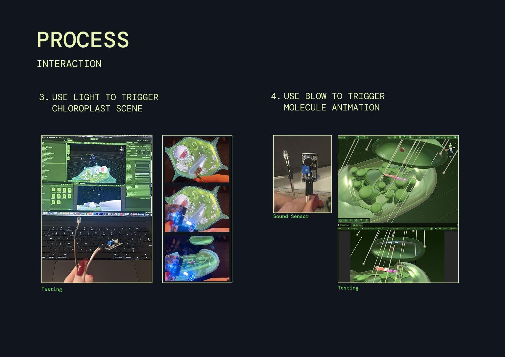
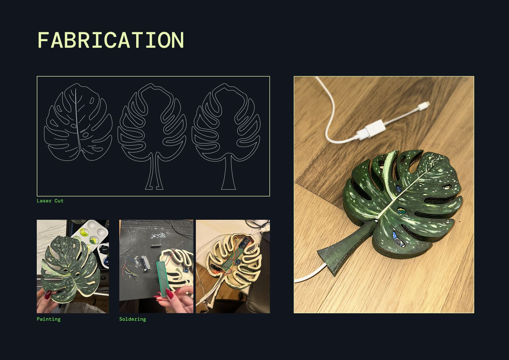

Case studyPlate IV · AR · 2025
Cell-AR
A plant cell you can enter. Shine a light to open the chloroplast, blow to send carbon dioxide in, and watch photosynthesis play out.

- Type
- AR environment
- Software
- Unity (C#), Cinema 4D, Rhino
- Hardware
- Arduino Nano, BH1750 light sensor, LM393 sound sensor
- Fabrication
- Laser-cut, painted and soldered leaf housing
Inspiration
ResearchThe project started from textbook diagrams of the plant cell and of photosynthesis, then from sketches of what each molecule should look like once it moves.


Diagram
Two scenes- Scene 1 · Cell
- Free-look camera. The “Enter Cell-AR” button releases an atom; press W to steer it and cruise the cell.
- Prompt 1
- Give the Cell-AR some light. The audience uses a flashlight.
- Scene 2 · Chloroplast
- The light opens the chloroplast scene.
- Prompt 2
- Give the Cell-AR some CO₂. The audience blows; CO₂ is emitted and the photosynthesis animation plays.


Hardware input
Serial communicationAn Arduino Nano reads two sensors and talks to Unity over serial. A BH1750 light sensor sends “lux(400)” when a flashlight hits it, which switches the scene. An LM393 sound sensor sends “blow”, which starts the molecule animation.
CellerArLightAndCO2.cpp runs on the board; LightSensorSceneSwitch.cs and BlowDetectorUnity.cs listen in Unity.


Asset building
The chloroplast was modelled in Cinema 4D and Rhino from microscope references, the molecules (oxygen, carbon dioxide, ADP and ATP) from their structural diagrams. The cell itself started from a bought asset.


Animation and effect
The organelles scale in rhythm: vacuole, chromatin and chloroplast. Two particle systems carry the inputs, CO₂ as gas and light as photons with trails.


The molecules follow the actual equations. ADP and phosphate become ATP in the light reactions; carbon dioxide goes into the chloroplast in the Calvin cycle; oxygen flies away. RandomSpawner.cs duplicates the animated modules at random.
// photosynthesis, light reactions
2 H2O + 2 NADP+ + 3 ADP + 3 Pi + light → 2 NADPH + 2 H+ + 3 ATP + O2
// Calvin cycle
3 CO2 + 6 NADPH + 9 ATP + 6 H+ → G3P + 6 NADP+ + 9 ADP + 3 H2O + 8 Pi

Interaction
The “Enter Cell-AR” button switches to player mode to cruise inside the cell, and a prompt hints at using light to trigger the chloroplast scene (ButtonPromptController.cs). In player mode you are an oxygen atom: WASD moves it and the mouse turns the view (BallController.cs, CameraFollow.cs).


Then the physical triggers were tested in place: light for the chloroplast scene, a breath on the sound sensor for the molecule animation.


Fabrication
Leaf housingThe sensors live in a monstera leaf: laser cut, painted and soldered by hand.

